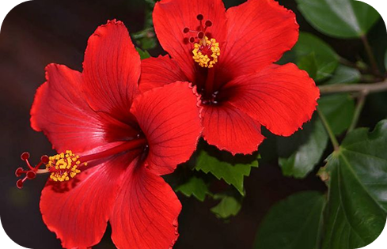
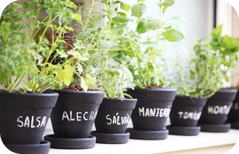

Verduras
Verduras são uma ótima escolha para começar sua horta. São fáceis de cultivar e crescem rapidamente. Saiba mais sobre o cultivo de alface, espinafre, couve e outras verduras.
Legumes
Legumes como cenoura, beterraba e abobrinha são versáteis e podem ser cultivados em vasos ou canteiros. Veja dicas para o plantio e cuidados desses vegetais.
Frutas
Algumas frutas podem ser cultivadas em pequenos espaços, como morangos e tomates-cereja. Veja como cuidar dessas plantas frutíferas e aproveitar seus deliciosos frutos.

Flores comestíveis
Flores comestíveis como capuchinha e calendula não só adicionam beleza à sua horta, mas também podem ser usadas em saladas e outras receitas. Aprenda a cultivar e usar essas flores na cozinha.

Plantio em Vasos
Ideal para pequenos espaços, os vasos podem ser usados para cultivar uma variedade de plantas, desde ervas até vegetais. Saiba como escolher o vaso adequado e como cuidar das suas plantas.
Canteiros Elevados
Perfeitos para quintais e áreas externas, os canteiros elevados proporcionam um solo bem drenado e um fácil acesso às plantas. Veja dicas de construção e manutenção.
Hidroponia
Uma técnica de cultivo sem solo, onde as plantas crescem em soluções nutritivas. Descubra como montar um sistema hidropônico e quais plantas são ideais para esse método.

Jardins Verticais
Ótimos para quem tem espaço limitado, os jardins verticais permitem o cultivo de plantas em paredes ou estruturas verticais. Aprenda a criar seu próprio jardim vertical.
Orgânico
Adubos orgânicos são feitos a partir de matéria orgânica e são uma ótima opção para quem quer manter a horta 100% natural. Aprenda como fazer compostagem em casa e quais materiais utilizar.
Químico
Adubos químicos fornecem nutrientes de forma rápida e eficiente. Saiba mais sobre quando e como utilizar adubos químicos, e os cuidados necessários para não prejudicar as plantas.
Verde
Adubos verdes são plantas cultivadas com o objetivo de serem incorporadas ao solo para melhorar sua fertilidade e estrutura. Conheça as melhores plantas para adubo verde e como utilizá-las.
Compostagem
Compostagem é o processo de decomposição de matéria orgânica para criar um adubo rico em nutrientes. Descubra como começar a compostar em casa e as melhores práticas para uma compostagem eficiente.